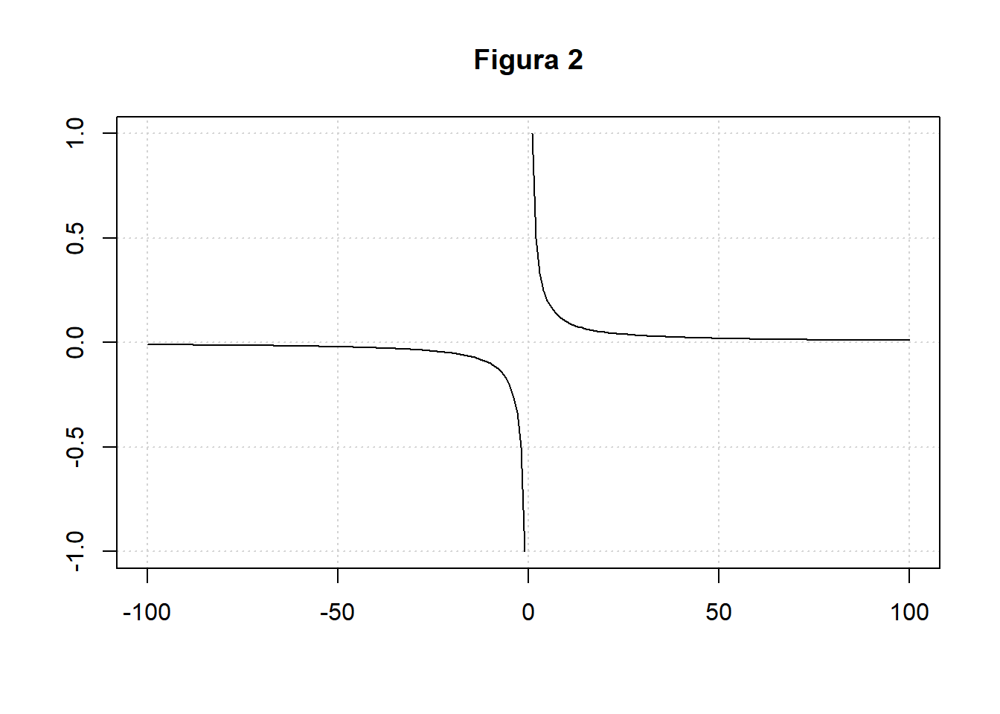

1.2 Proporción
Proporción es la relación de igualdad que existe entre dos razones. Se escribe \(\frac{a}{b}=\frac{c}{d}=k\) con \(d,b\neq 0\) y para que puede existir la razón \(ac\neq 0\). Y se lee \(a\) es a \(b\) como \(c\) es a \(d\). Donde
\(k\): Constante de proporcionalidad.
\(a,d\): Extremos de la proporción.
\(b,c\): Medios de la proporción.
Teorema fundamental de las proporciones. Dos razones forman una proporción sí y sólo si el producto de los extremos es igual al producto de los medios. \(\frac{a}{b}=\frac{c}{d} \Longleftrightarrow ad=bc.\) Asimismo son equivalentes las siguientes expresiones en la interpretación de proporciones:
\[\begin{equation} a=\frac{bc}{d} \Longleftrightarrow c=\frac{ad}{b}. \end{equation}\]
Esto implica que en ocasiones veremos a la proporción expresadas de esas maneras.
El término relación proporcional se usa para describir razones que comparten la misma relación multiplicativa entre las dos cantidades en cada razón. Por ejemplo, si un metro de tela tiene un precio de \(\$\$\$\), el costo de un corte de tela depende del número de metros que tenga el largo. A mayor número de metros de tela corresponde un mayor costo. Esto se conoce como proporcionalidad y se representa por la ecuación \(y=kx\) en donde \(y\) es la variable dependiente , \(k\) es la pendiente y \(x\) la variable independiente. Observemos que de dicha ecuación, nos dice que, \(k\) está comparando multiplicativamente las cantidades \(x\) e \(y\), es decir, \(k\) es una constante de razón, la cual es conocida como la constante de proporcionalidad.
Cuando al aumentar una de las cantidades y aumente proporcionalmente la otra diremos que es una proporcionalidad directa (véase la figura 1). En caso contrario, cuando al aumentar una cantidad la otra disminuye en la misma proporción, diremos que es una proporcionalidad inversa(véase la figura 2). De manera más formal enunciamos:
1. Proporcionalidad directa: Dos variables \(x\) e \(y\), son directamente proporcionales si existe una constante no nula \(k\) tal que \(y=kx\). Para \(x\neq 0\) la constante de proporcionalidad \(k\) puede expresarse como \(k=yx\).
Una proporcionalidad directa puede verse como una ecuación lineal de la forma \(y=mx+b\) con \(b=0\) y una pendiente \(m=k\) . Esto corresponde al crecimiento lineal.

2. Proporcionalidad inversa: Dos variables, \(x\) e \(y\), son inversamente proporcionales si el del producto \(xy\) es constante, es decir, \(xy=k\), donde \(k\) es la constante de proporcionalidad. La gráfica de dos variables que varían inversamente en el plano cartesiano de coordenadas es una hipérbola rectangular . El producto de las \(x\) y \(y\) entre cada punto de la curva es igual a la constante de proporcionalidad . Dado que ni \(x\) y ni y pueden ser iguales a cero (porque k no es cero), la gráfica nunca cruza ninguno de los ejes.
